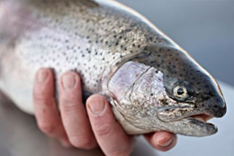

La truite arc-en-ciel
– également connue sous le nom de "truite saumonée"
La truite arc-en-ciel (Oncorhynchus mykiss ) est originaire d'Amérique du Nord, mais est élevée au Danemark depuis plus de 100 ans. La truite est aujourd'hui élevée un peu partout à travers le monde, mais le Danemark fait partie des 10 plus grands pays producteurs de truites au monde. La production annuelle du Danemark est d’environ 30 mt de truite d'eau douce et env. 15 mt de truite élevée en mer. Lorsqu’elle est destinée au marché européen, la truite d'eau douce a généralement une taille portion. La truite de mer fait 1 à 4 kg.
Aqua Production
Notre site de traitement, Aqua Production, a le numéro d’agrément DK4731. Nous transformons et conditionnons nos truites conformément à nos stricts protocoles en matière de qualité et de sécurité alimentaire, afin de garantir les normes de produits les plus élevées. Nous basons notre production sur les principes HACCP et sommes régulièrement contrôlés par les services vétérinaires et de sécurité alimentaire danois (Danish Veterinary and Food Administration).
Truites fraîches
Nous sommes en mesure de fournir à nos clients du monde entier des truites fraîches tous les ans en novembre et en décembre. Les tailles proposées sont 1 à 2 kg, 2 à 3 kg et 3 à 4 kg et elles sont toutes emballées dans notre station d’emballage.
Truites surgelées
Pendant le traitement, nous envoyons une grande partie de nos truites au Danemark pour quelles y bénéficient d’un entreposage frigorifique. Nous produisons de la truite congelée avec et sans tête. Nous exportons de la truite congelée dans le monde entier. AquaPri travaille en étroite collaboration avec les entreprises d’entreposage frigorifique afin de s’assurer qu’elles respectent les mêmes normes strictes qu’elle en matière de sécurité alimentaire et de qualité. AquaPri accorde une importance à ce que nos précieux clients aient toujours la certitude qu’AquaPri leur fournit la meilleure qualité de produit qui soit.
Filets de truite
Des filets de truite peuvent être produits sur commande. Le filetage aura lieu en novembre et décembre, lorsque la majorité des truites fraîches seront prêtes à la récolte. Nous pouvons personnaliser ce produit, le découper et l’emballer exactement comme vous le souhaitez.